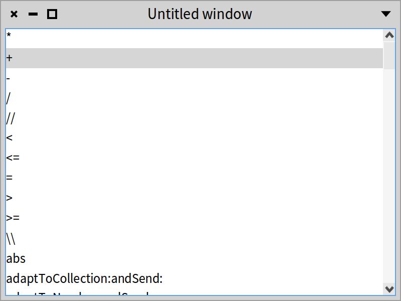
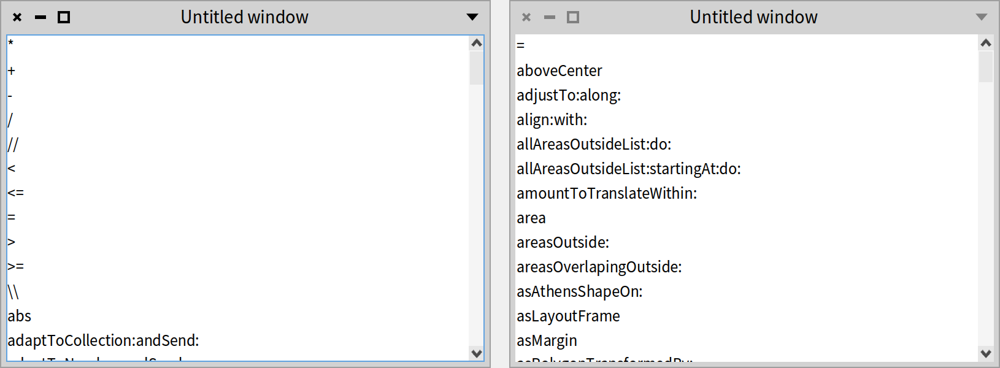

6 The dual aspects of presenters: Domain and interaction model
A presenter has a dual role in Spec. On the one hand, it acts as the glue between domain objects and widgets, and on the other hand, it implements the user interface logic by connecting subpresenters together. These two aspects compose the core of a presenter and this is what this chapter describes.
We start by presenting an important aspect of presenters: the way they handle communication with domain objects that here we call a model.
In this chapter, we visit the key aspects of Spec and put the important customization points of its building process in perspective.
6.1 About presenters on a model
Frequently you want to open a presenter on a given object such as your list of to-do items. In that case, you would like the subpresenters (list, text,..) to be initialized based on the object that you passed. For example, you may want to get all the items in your basket.
However, simply instantiating a presenter using the message new and passing the object will not work because messages such as initializePresenters will be already sent.
There are two ways to address this situation in Spec and in particular, Spec offers a special presenter called SpPresenterWithModel. Let us explain how to take advantage of it.
We will build the simplest example to show how to do it. We will implement a presenter that lists the method signatures of a class, first using a presenter inheriting from the default superclass (SpPresenter) and second using a presenter (subclass of SpPresenterWithModel) dedicated to handling a model.
6.2 Example with SpPresenter
If you do not need to react to model changes, you can simply inherit from SpPresenter, override the setModelBeforeInitialization: method to set your domain object, and use YourPresenter on: yourDomainObject to instantiate it.
This is exactly what we do hereafter.
First, we create a new presenter class.
SpPresenter << #MethodLister
slots: { #sourceClass . #list};
package: 'CodeOfSpec20Book'We define a list presenter and populate it.
MethodLister >> initializePresenters
list := self newList.
list items: sourceClass selectors sortedSpecializing the method setModelBeforeInitialization:, we assign its argument coming from the on: message to the instance variable sourceClass for future use.
MethodLister >> setModelBeforeInitialization: aModel
sourceClass := aModelWe define a basic layout for the list presenter.
MethodLister >> defaultLayout
^ SpBoxLayout newTopToBottom
add: #list;
yourselfThe following snippet opens a window with the list of methods of the class Point as shown in Figure 6.1.
(MethodLister on: Point) open.
6.3 SpPresenter vs. SpPresenterWithModel
The key difference between using SpPresenter and SpPresenterWithModel is if you need to react to changes of the model. We mean that while the presenter is open, an event changes the model that was used to build the UI. In our example, that means that when you change the class, the method list displays its selectors. If you need this behavior, then you should use SpPresenterWithModel.
The following snippet shows that the change of model is not taken into account in the sense that the list is not refreshed and still displays methods of the class Point, while the methods of the class `Rectangle should be displayed.
| lister |
lister := MethodLister on: Point.
lister open.
lister setModel: Rectangle6.4 Example with SpPresenterWithModel
A presenter may also have a model that is a domain object you need to interact with to display or update data. In that case, you should inherit from SpPresenterWithModel so that the presenter keeps a reference to the domain object and manages its changes. As a client of this presenter, we use the message model: to change the model.
The method is inherited from the superclass. This model: method implements the following behavior:
- If the domain object is an instance of
Model, it is stored as is in the presenter. - Else a value holder is created to hold the domain object so that you can be notified when the domain object used by the presenter changes.
You do not need to define the method setModelBeforeInitialization: as we previously showed.
Let us revisit our little example. First, we inherit from SpPresenterWithModel.
SpPresenterWithModel << #MethodListerWithModel
slots: { #list };
package: 'CodeOfSpec20Book'Second, we define initializePresenters.
MethodListerWithModel >> initializePresenters
list := self newListYou can then implement the modelChanged method to refresh your UI when the model changes.
MethodListerWithModel >> modelChanged
list items: self model selectors sortedWe define the same layout method as before:
MethodListerWithModel >> defaultLayout
^ SpBoxLayout newTopToBottom
add: #list;
yourself
Now we can open our widget. As the following script shows, it will react to the change of the model (see Figure 6.2).
| lister |
lister := MethodListerWithModel on: Point.
lister open.
lister model: RectangleNote that the right way to create a presenter is to use the method newApplication: anApplication because it ensures that the application knows its constituents.
So the code above should be:
| lister app |
app := SpApplication new.
lister := MethodListerWithModel newApplication: app.Then we have a problem because we want to specify the model too. The correct and idiomatic way is to use the method newApplication:model: so the final code version is:
| lister |
app := SpApplication new.
lister := MethodListerWithModel newApplication: app model: Point.
lister open.
lister model: RectangleYou saw that you can easily build an application user interface populated from a model and reacting to model changes.
Now we will focus on the user interface logic modeling.
6.5 User interface building: a model of UI presentation
A key aspect of Spec is that all user interfaces are constructed through the reuse and composition of existing user interfaces. To allow this, defining a user interface consists of defining the model of the user interface, and not the user interface elements that will be shown on screen. These UI elements are instantiated by Spec, taking into account the underlying UI framework.
In the end, it is the presentation model and the UI elements that make up the resulting user interface that is shown. This composition of the presentation models is represented as a Presenter object as in Model-View-Presenter. The presenter that is defined in Spec corresponds to a presenter in the MVP triad as shown in Figure 6.3.
To define a new user interface, the developer should create a subclass of SpPresenter.
Fundamentally, it is built around three concerns that materialize themselves as the following three methods in SpPresenter:
- The method
initializePresenterstreats the subpresenters themselves. - The method
connectPresenterstreats the interactions between the subpresenters. - The method
defaultLayouttreats the layout of the subpresenters.
Hence, these methods are typically found in the model of each user interface. You can read the code of the small interface presented in Chapter 2 to get examples of each of the points we will present now.
In this chapter, we describe the finer points of each method and how these three methods work together to build the overall UI.
6.6 The initializePresenters method
The method initializePresenters instantiates, holds in instance variables, and partially configures the different widgets that will be part of the UI.
The instantiation of the presentation models will cause the instantiation and initialization of the different lower-level user interface components, constructing the UI that is shown to the user. The first part of the configuration of each widget is specified in initializePresenters as well.
The focus of this method is to specify what the widgets will look like and what their self-contained behavior is. The behavior to update the model state, e.g., when pressing a Save button, is described in this method as well. It is explicitly not the responsibility of this method to define the interactions between the widgets.
In general, the initializePresenters method should follow the pattern:
- Widget instantiation
- Widget configuration
- Specification of focus order
The last step is not mandatory since the focus order is by default given by the order of declaration of the subpresenters.
Note. Specifying the method initializePresenters is mandatory, as without it the UI would have no widgets.
Subpresenter instantiation
The instantiation of a subpresenter (i.e., the model for a widget composing the UI) can be done in two ways: through the use of a creation method or through the use of the instantiate: method.
- Considering the first option, the framework provides unary messages for the creation of all basic widgets. The format of these messages is
new[Widget], for example,newButtoncreates a button widget, andnewListcreates a list widget. The complete list of available widget creation methods can be found in the classSpPresenterin the protocolscripting - widgets. - The second option is more general: to reuse a
SpPresentersubclass (other than the ones handled by the first option), the widget needs to be instantiated using theinstantiate:method. For example, to reuse aMessageBrowserpresenter, the code isself instantiate: MessageBrowser. Theinstantiate:method has the responsibility to build an internal parent presenter tree.
6.7 The connectPresenters method
The method connectPresenters defines the interactions between the different widgets. By connecting the behaviors of the different widgets, it specifies the overall presentation, i.e., how the overall UI responds to interactions by the user. Usually, this method consists of specifications of actions to perform when a certain event is received by a widget. The whole interaction flow of the UI then emerges from the propagation of those events.
Note. The method connectPresenters is an optional method for a Spec UI, but we recommend to separate this behavior clearly.
In Spec, the different UI models are contained in value holders, and the event mechanism relies on the announcements from these value holders to manage the interactions between widgets.
Value holders provide the method whenChangedDo: that is used to register a block to perform on change, and the method whenChangedSend: aSelector to: aReceiver to send a message to a given object. In addition to these primitive methods, the basic widgets provide more specific hooks, e.g., when an item in a list is selected (whenSelectionChangedDo:).
6.8 The defaultLayout method
Widget layout is defined by specifying methods that state how the different widgets are placed in the UI. In addition, it also specifies how a widget reacts when the window is resized. As we will see later, these methods can have different names.
The method defaultLayout is an instance method, but it can be also defined at the class level. Put differently, typically all the instances of the same user interface have the same layout, but a layout can be specific to one instance and be dynamic.
Note. Specifying a layout is mandatory, as without it the UI would show no widgets to the user.
Using setter message layout:
We recommend to clearly separate presenter initialization (initializePresenters and defaultLayout). You can, however, also use the layout: message to set a layout during the presenter initialization phase.
Multiple layouts for a widget
For the same UI, multiple layouts can be described, and when the UI is built, the use of a specific layout can be indicated. To do this, instead of calling open (as we have done until now), use the openWithLayout: message with a layout as an argument.
6.9 Conclusion
In this chapter, we have given a more detailed description of how the three fundamental methods of Spec, initializePresenters, defaultLayout, and connectPresenters, are each responsible for a different aspect of the user interface building process.
Although reuse is fundamental in Spec, we did not explicitly treat it in this chapter. Instead, we refer to the next chapter for more information.